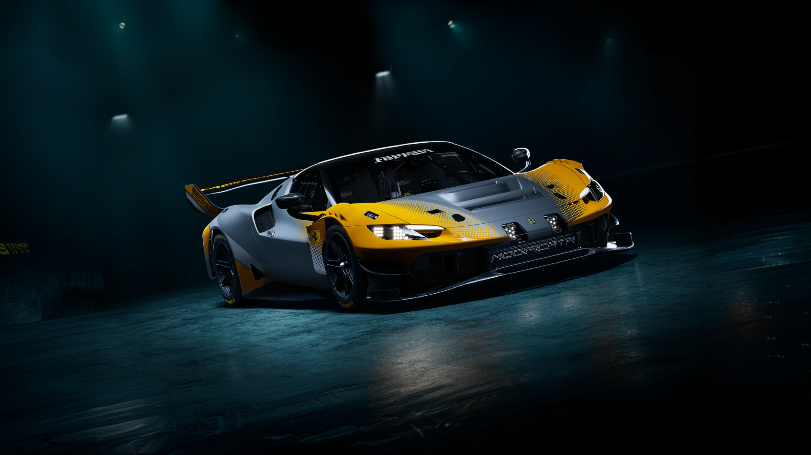
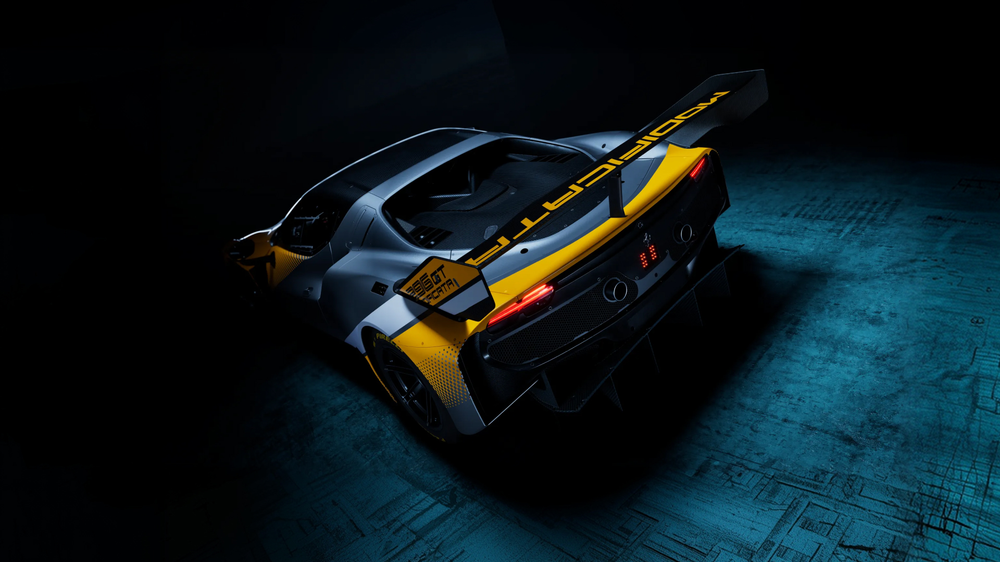
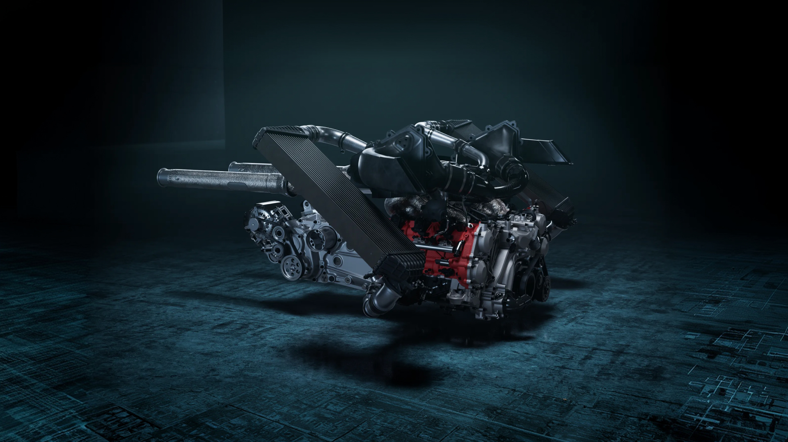
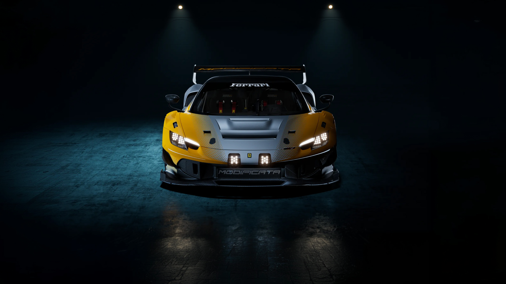
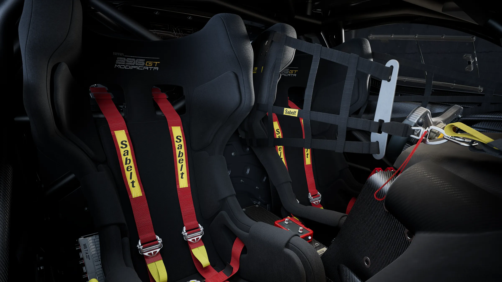
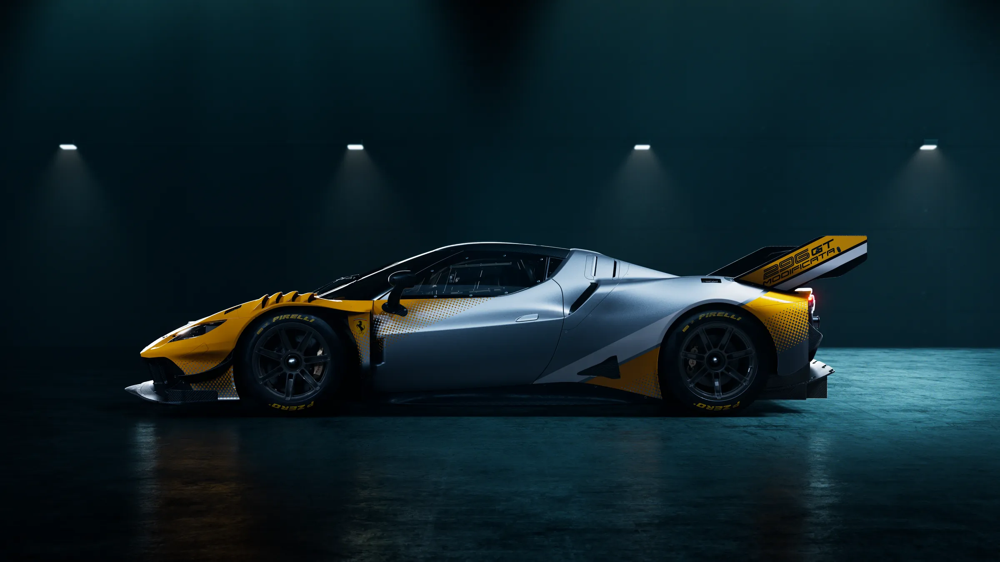
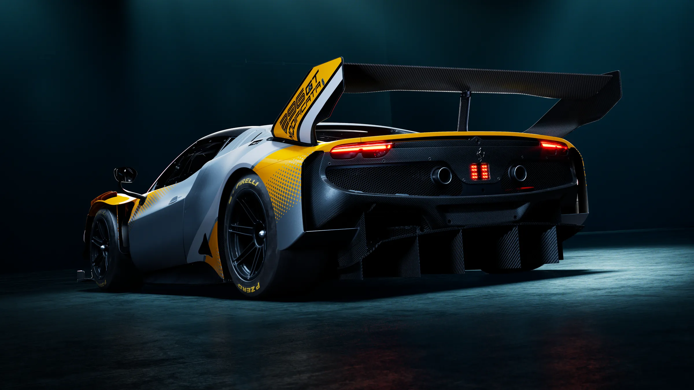
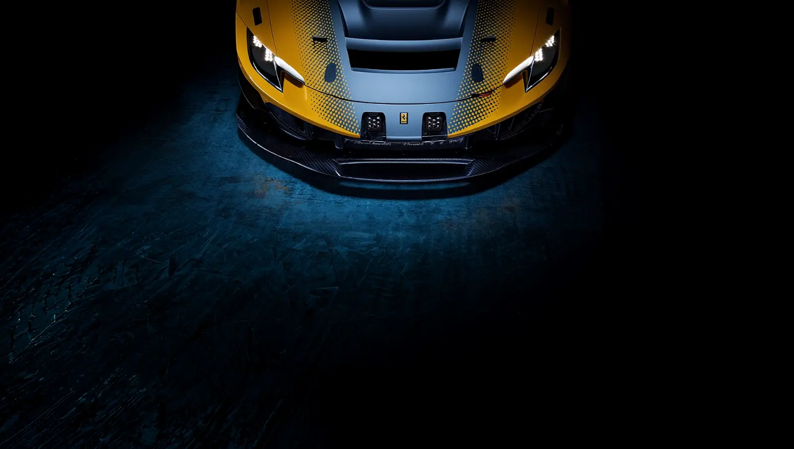

Ferrari 296 GT Modificata
The most extreme model yet created for the Club Competizioni GT program
Track use only · Club Competizioni GT · Produced in exceptionally limited numbers

1The evolution
The most extreme evolution of the 296 GT3 Evo

2The power unit
730 HP V6

3Aerodynamics
Engineered for extreme performance
To complement the increase in power, the 296 GT Modificata’s aerodynamics and cooling systems were re-engineered to meet the car’s greater performance demands. A new front hood maximizes heat dissipation, while revised vents and a dedicated airflow-management vane optimize thermal management during intensive track use.
An all-new slotted front splitter improves underfloor efficiency, generating additional downforce and enhancing high-speed stability. At the rear, a newly developed wing improves aerodynamic efficiency while preserving the car’s optimal balance and predictable dynamic behavior.

4The cabin
Born for two

5Braking
Performance with complete confidence
New front brake discs, an additional air intake and an all-new cooling duct improve the braking system’s thermal management, providing more consistent performance and greater reliability.
The Motorsport ABS system delivers stable, predictable braking with precise modulation, making the car’s performance more accessible to drivers with varying levels of track experience.
- Front discs
- 400 × 26 mm
- Rear discs
- 332 × 32 mm

6Equipment and options
Limitless possibilities

7The programme
Created for the racetrack
Conceived for non-competitive track use, the Ferrari 296 GT Modificata was created for the Club Competizioni GT program, offering clients the opportunity to develop their driving potential in an exclusive setting.
The car is intended exclusively for track-day use and participation in Ferrari Club Competizioni GT events. This members-only program gives Ferrari clients access to some of the world’s most prestigious circuits. Purchase of the 296 GT Modificata includes two years, or 12 rounds, of participation, allowing owners to experience the car across top global circuits with distinct layouts and technical characteristics.
- Included
- 2 years
- Rounds
- 12
- Type
- 2,992 cc turbocharged 120° V6
- Bore / stroke
- 88 × 82 mm
- Maximum power
- 730 cv (537 kW) @ 7,500 rpm
- Maximum torque
- 800 Nm @ 5,000 rpm
- Specific output
- 244 cv/l (179 kW/l)
- Compression ratio
- 9.4:1
- Gearbox
- Transverse six-speed sequential
- Clutch
- Carbon
- TC
- Traction control
- DDU
- Driving information display
- Length
- 5,033 mm
- Width with mirrors
- 2,230 mm
- Width without mirrors
- 2,050 mm
- Height
- 1,082 mm
- Wheelbase
- 2,660 mm
- Front track
- 1,726 mm
- Rear track
- 1,714 mm
- Dry weight
- 1,330 kg
- Fuel tank
- 120 l
- Front
- 325/680 R18
- Rear
- 325/705 R18
- Front discs
- 400 × 26 mm
- Rear discs
- 332 × 32 mm